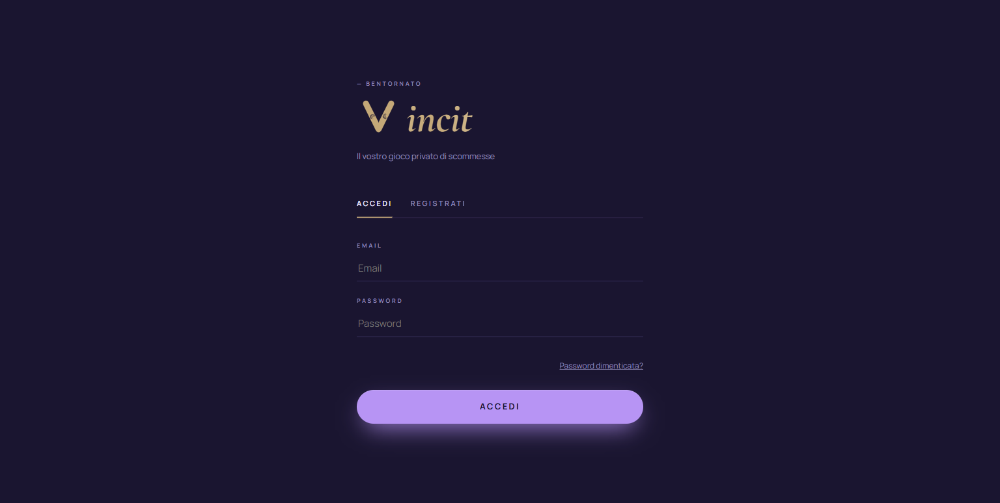
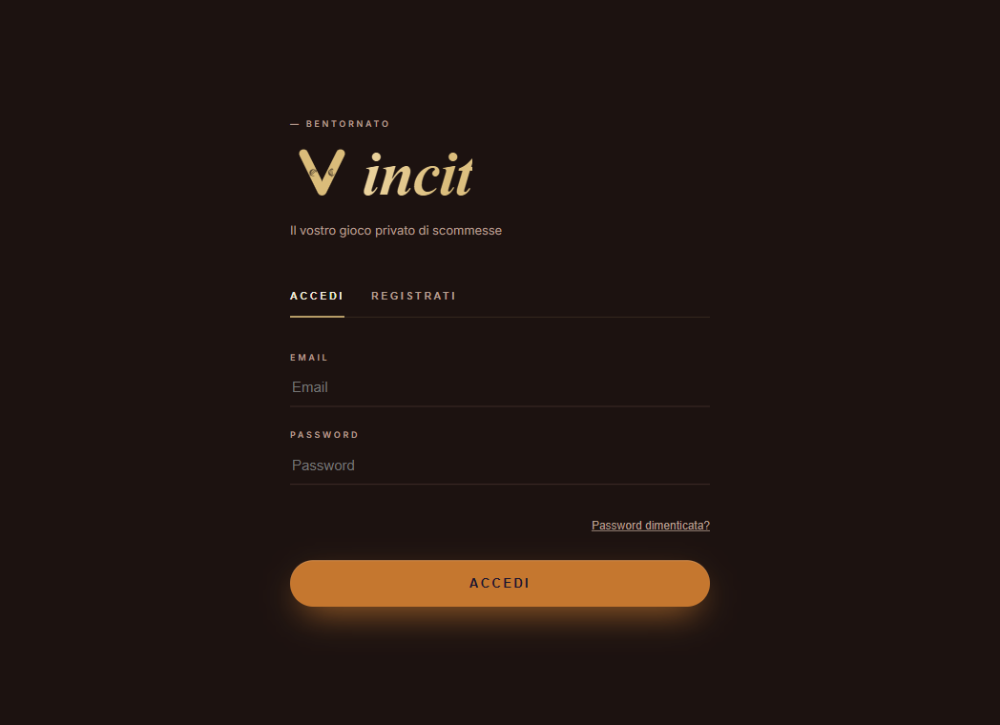
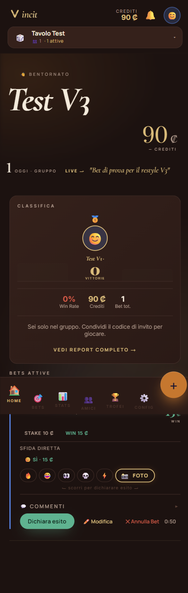
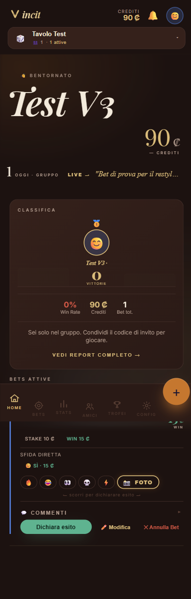

Vincit — prima / dopo
Confronto del restyle: la V1 originale (palette "Lavanda & Ottone" viola) → la V3 Brass & Velvet (velluto bruno-rame caldo, Playfair + Inter, accenti oro/rame). Stesso backend, stesse funzioni, stessa PWA.
1 · Accesso
Da fondo viola lavanda + bottone viola → fondo velluto bruno-rame + CTA gradiente oro→rame. Wordmark e label in tono caldo.
Prima · V1 Lavanda

Viola dominante, ottone come accento. Bottone tinta piatta.
Dopo · V3 Brass

Velluto bruno-rame, CTA gradiente oro→rame, glow caldo.
2 · Dashboard + navigazione
Stessa schermata in tema Brass: il "prima" ha ancora la nav a emoji multicolore + CTA piatta; il "dopo" introduce le icone-linea monocrome (oro quando attive), il gradiente sulle CTA e i titoli Playfair.
Prima · pre-déco

Nav a emoji (🏠🎯📊👥🏆⚙️) — stonano col lusso brass.
Dopo · déco

Icone-linea monocrome oro/rame, HOME attiva in oro.
Cosa è cambiato nel restyle V3
- Palette — da viola "Lavanda & Ottone" a velluto bruno-rame caldo (tema BRASS).
- Tipografia — ridotta a 2 famiglie: Playfair Display (titoli + numeri ₡) + Inter (UI). Rimossi Cormorant e Manrope.
- Nav — icone-linea monocrome al posto delle emoji multicolore; oro quando attive.
- CTA — gradiente oro→rame al posto della tinta piatta.
- Coin easter-egg — diventerà una fiche (prossimo step).
- Invariati — backend, funzioni, PWA, struttura. Solo il look cambia.